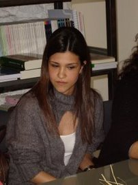
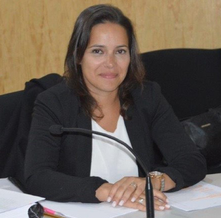
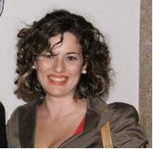
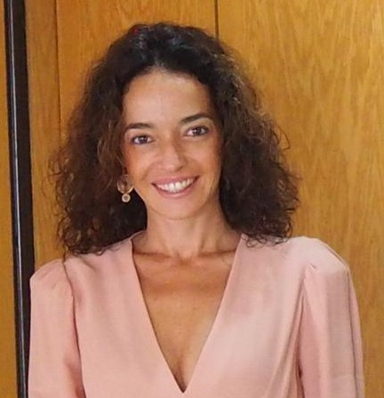

Professor Doutor
José Luis Alba Robles
Doutora
Marillanos Reolid Rodenas
Doutora
Shaila Villar García
Professora Doutora
Maria Francisca Rebocho
Professora Doutora
Ana Isabel Sani
Professora Doutora
Ana Sacau

Professora Doutora
Ana Sofia Neves
Professora Doutora
Sónia Caridade
Professor Doutor
Gonzalo Escobar Marulanda
Professora Doutora
Laura Nunes
Mestre
Augusto Meireis

Professora Doutora
Ana Raquel Conceição
Professora Doutora
Lígia Ferros
Professor Doutor
André Piton
Professor Doutor
Mário João Ferreira Monte
Doutor
Pedro Silva Carvalho
Professor Doutor
José Manuel Morais Anes
Mestre
Ana Teresa de Andrade

Professora Doutora
Tânia Konvalina-Simas
Professora Doutora
Vera Mónica Duarte
Professor Doutor
Bacelar Gouveia
Professor Doutor
João Barrigas
Professor Doutor
Hernâni M. Marques de Carvalho
Doutor
Ricardo Serrano Vieira
Doutora
Odete Costa

Professora Doutora
Rita Rola
Doutora
Susana Almeida